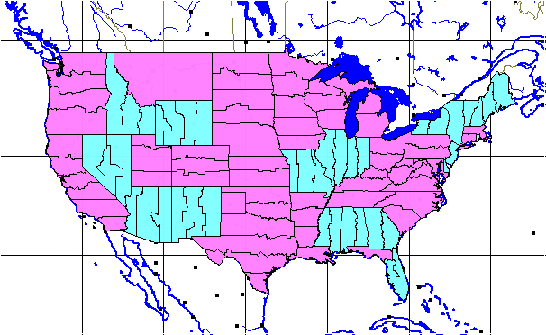
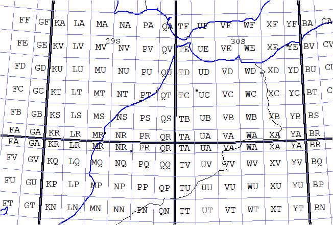

MGRS/USNG 6x8 zones. This region has a number of non-standard zone boundaries, to keep the number of very thin zones in a country to a minimum. Because of the convergence of the meridians, these zones are very thin.
You should note the special zones near Svalbard and SW Norway (zone 32V), which are not quite "universal" but show the mapping challenges for high latitude countries.
This will automatically download a shapefile provided by NGA,

These can map the distortion of the projection, if the squares do not maintain their size and shape.
To plot the labels, you must be zoomed in to a small area.
This will automatically download a shapefile provided by NGA,